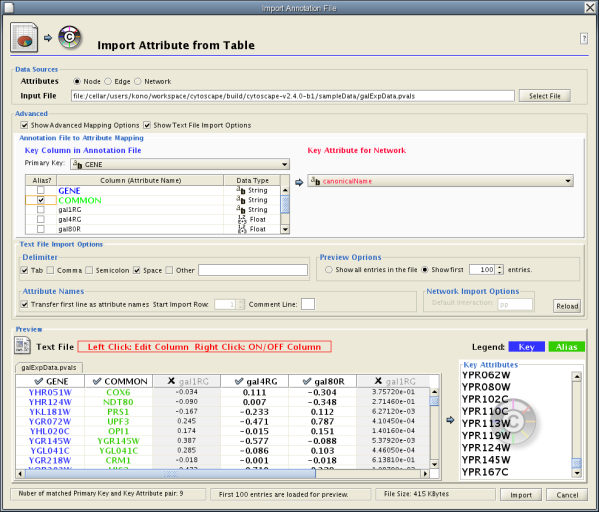
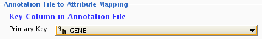
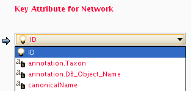
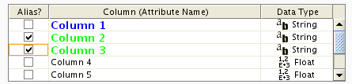
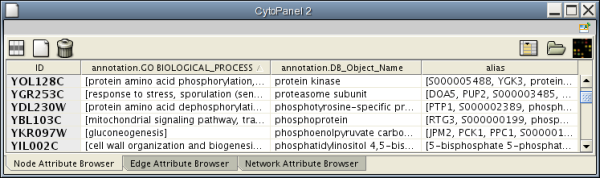

Interaction networks are useful as stand-alone models. However, they are most powerful for answering scientific questions when integrated with additional information. Cytoscape allows the user to add arbitrary node, edge and network information to Cytoscape as node/edge/network(1) attributes. Attributes could be, for example, annotation data on a gene or confidence values in a protein-protein interaction. These attributes can then be visualized in a user-defined way by setting up a mapping from data attributes to visual attributes (colors, shapes, etc.) See the section on visual styles for a discussion of this.
Node and edge attribute files are simply formatted: A node attribute file begins with the name of the attribute on the first line, and on each following line, has the name of the node, followed by an equals sign, followed by the value of that attribute. Numbers and text strings are the most common attribute types. All values for a given attribute must have the same type. For example:
FunctionalCategory YAL001C = metabolism YAR002W = apoptosis YBL007C = ribosome
An edge attribute file has much the same structure, except that the name of the edge is the source node name, followed by the interaction type in parentheses, followed by the target node name. Directionality counts, so switching the source and target will refer to a different (or perhaps non-existent) edge. The following is an example edge attributes file:
InteractionStrength YAL001C (pp) YBR043W = 0.82 YMR022W (pd) YDL112C = 0.441 YDL112C (pd) YMR022W = 0.9013
Cytoscape treats edge attributes as directional, so note that the second and third edge attribute values refer to two different edges (source and target are reversed, though the nodes involved are the same).
Each attribute is stored in a separate file. Node and edge attribute files use the same format. Node attribute file names often use the suffix ".noa", while edge attribute file names use the suffix ".eda". Cytoscape recognizes these suffixes when browsing for attribute files.
Node and edge attributes may be loaded at the command line using the –n and –e options or via the File → Import menu.
When expression data is loaded using an expression matrix, it is automatically copied into the Node Attributes data structure unless explicitly specified not to.
Node and edge attributes are attached to nodes and edges, NOT to networks. If two different networks have the same nodes, then those nodes will have the same attributes. Even if a network is loaded after attributes have been loaded, if the nodes or edges found in the new network already exist, then any existing attributes will be applied to those nodes.
Note (1): Network attributes are supported in Cytoscape, but network attribute file reader is not yet implemented in Cytoscape 2.4. If you need to import network attributes, please use attribute table import function or write network attributes directly in XGMML file.
Every attribute file has one header line that gives the name of the attribute, and optionally some additional meta-information about that attribute. The format is as follows:
attributeName (class=formal.class.of.value)
The first field is always the attribute name: it cannot contain spaces. If present, the class field defines the formal (package qualified) name of the class of the attribute values. For example, java.lang.String for Strings, java.lang.Double for floating point values, java.lang.Integer for integer values, etc. If the value is actually a list of values, the class should be the type of the objects in the list. If no class is specified in the header line, Cytoscape will attempt to guess the type from the first value. If the first value contains numbers in a floating point format, Cytoscape will assume java.lang.Double; if the first value contains only numbers with no decimal point, Cytoscape will assume java.lang.Integer; otherwise Cytoscape will assume java.lang.String. Note that the first value can lead Cytoscape astray: for example,
floatingPointAttribute firstName = 1 secondName = 2.5
In this case, the first value will make Cytoscape think the values should be integers, when in fact they should be floating point numbers. It's safest to explicitly specify the value type to prevent confusion. A better format would be:
floatingPointAttribute (class=Double) firstName = 1 secondName = 2.5
or
floatingPointAttribute firstName = 1.0 secondName = 2.5
Every line past the first line identifies the name of an object (node in a node attribute file and an edge in a edge attribute file) along with the String representation of the attribute value. The delimiter is always an equals sign; whitespace (spaces and/or tabs) before and after the equals sign is ignored. This means that your names and values can contain whitespace, but object names cannot contain an equals sign and no guarantees are made concerning leading or trailing whitespace. Object names must be the Node ID or Edge ID as seen in the left-most column of the attribute browser if the attribute is to map to anything. These names must be reproduced exactly, including case, or they will not match.
Edge names are all of the form:
sourceName (edgeType) targetName
Specifically, that is
Note that tabs are not allowed in edge names. Tabs can be used to separate the edge name from the "=" delimiter, but not within the edge name itself. Also note that this format is different from the specification of interactions in the SIF file format. To be explicit: a SIF entry for the previous interaction would look like
sourceName edgeType targetName
or
To specify lists of values, use the following syntax:
listAttributeName (class=java.lang.String) firstObjectName = (firstValue::secondValue::thirdValue) secondObjectName = (onlyOneValue)
This defines an attribute which is a list of Strings. The first object has three strings, and thus three elements in its list, while the second object has a list with only one member. In the case of a list every attribute value should be specified as a list, and every member of the list should be of the same class. Again, the class will be inferred if it is not specified in the header line. Lists are not supported by the visual mapper, so can’t be mapped to visual attributes.
Introduced in version 2.4, Cytoscape now supports importing delimited text and MS Excel attribute data tables. Using this functionality, users can now easily import data that isn't formatted into Cytoscape node or edge attribute file formats (as described above).

Sample Attribute Table 1
Table 12.
Object Key | Alias | SGD ID |
AAC3 | YBR085W|ANC3 | S000000289 |
AAT2 | YLR027C|ASP5 | S000004017 |
BIK1 | YCL029C|ARM5|PAC14 | S000000534 |
Attribute table file should contain a primary key column and at least one attribute column. Number of attribute columns is unlimited. Alias column is optional. First row can be used as attribute names, but it is optional. You can specify each attribute name from Attribute Table Import user interface.
User interface of Attribute Table Import is similar to Network Table Import.
Select File → Import → Attribute from Table (text/MS Excel)
Select one of the attribute types from Attributes radio buttons. Cytoscape can import node, edge, and network attributes.
Select a data file. To load a local file, click on Select File button and choose a data file. Input file can be text or Excel (.xls) file. To load a remote file, type source URL directly in the text box. To show preview for the remote file, click Reload button on Advanced panel.
(Optional) If the table is not properly delimited, change delimiter from Text File Import Options panel. Default delimiter is TAB. This is not necessary for Excel Workbooks.
By default, the first column is set to primary key. Change the key column if necessary.

Click Import button.
Attribute Table Import user interface has two advanced option panels to maximize mapping flexibility.
This panel is designed to change detail of mapping operation.
Primaly Key and Key Attribute

Old attribute file loader only supports mapping between node/edge ID and primary key in attribute file. To solve this limitation, new Attribute Table Import function supports both ID and attributes for mapping. You can choose an attribute for mapping from the list in the combo box.
Note: currently, only primitive data types (string, boolean, floating point, and integer) are supported for mapping, i.e. you cannot use list, map, or complex attribute as Key Attribute.
Aliases

Cytoscape uses simple mechanism to manage aliases of objects. Both nodes and edges can have alias. If attributes are loaded as alias, they are treated as special attribute called alias. This will be used when mapping attributes. If primary key and key attribute for an object does not match, Cytoscape searches a match between aliases and key attribute. To use columns in attribute table as alias, just click on check boxes in the alias table.

When Cytoscape is started, the Attribute Browser appears in the bottom Cytopanel. This browser can be hidden and restored using the F5 key or the View → Show/Hide attribute browser menu option. Like other Cytopanels, the browser can be undocked by pressing the little icon in the browser’s top right corner.
To swap between displaying node, edge, and network attributes use the tabs on the bottom of the panel: Node Attribute Browser, Edge Attribute Browser, and Network Attribute Browser. The attribute browser displays attributes belonging to selected nodes and/or edges and the currently selected network. To populate the browser with rows (as pictured above), simply select nodes and/or edges in a loaded network. By default, only the ID of nodes and edges is shown. To display more than just the ID, click the Select Attributes button and choose the attributes that are to be displayed. Each attribute chosen will result in one column in the attribute browser (in the screenshot above there are 5 columns total including the ID). Most attribute values can be edited by double-clicking an attribute cell; list values cannot be edited, and neither can the ID. Attribute rows in the browser can be sorted alphabetically by specific attribute by clicking on a column heading. A new attribute can be created using the Create New Attribute button. Attributes created using the attribute browser must be one of four types – integer, string, real number (floating point), or boolean. Attributes can be deleted using the Delete Attributes... button. NOTE: Deleting attributes removes them from Cytoscape, not just the attribute browser! To remove attributes only from the browser simply unselect the attribute using the Select Attributes button. The right-click menu on the Attribute Browser has several functions. This menu is useful for exporting attribute information to spreadsheet applications. For example, choose Select All and then Copy from the right-click and then paste into a spreadsheet application. Each attribute browser panel has a button for importing new attributes:  .
.
The Node Attribute Browser panel has additional buttons for loading Gene Expression attribute matrices ( ) as node attributes.